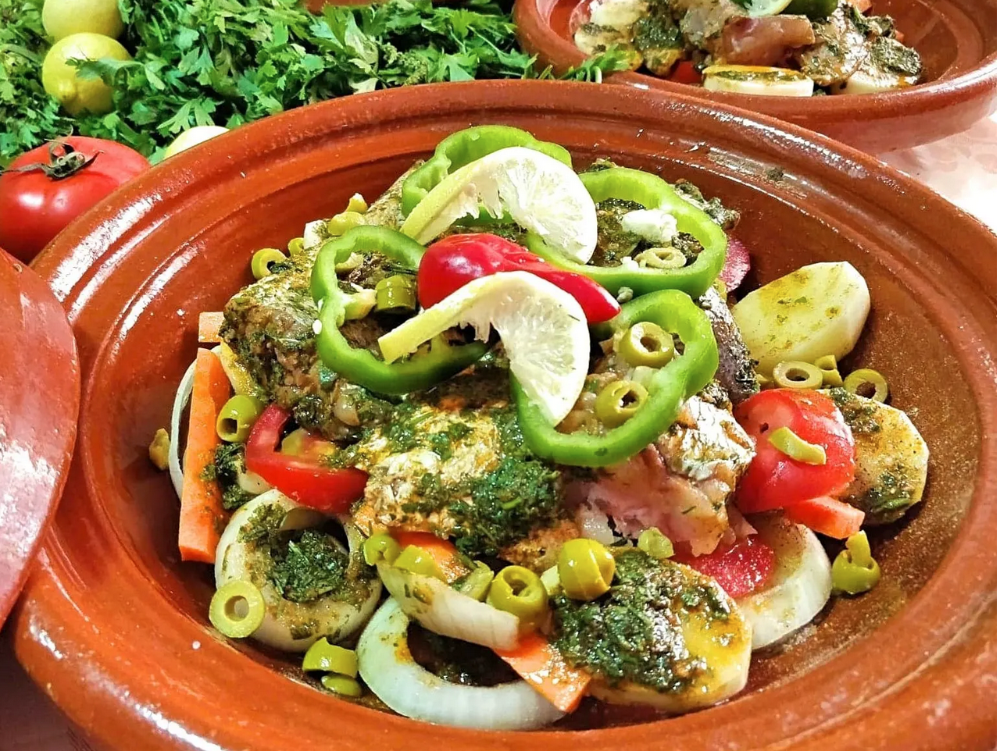

Moroccan Baked Fish Tagine with Vegetables
Ingredients
For the Tagine
- 35 oz. firm thick fish, cut into pieces
- 1 batch chermoula - (see below)
- 1/3 cup olive oil
- 1 large onion, - thinly sliced
- 2 large potatoes, - cut into 1/4" (0.5 cm) slices
- 1 or 2 carrots, - cut into 1/4" (0.5 cm) sticks
- 2 tomatoes, - sliced
- 2 bell peppers (any color), - thinly sliced, seeds removed
- fresh lemon slices - for garnish
- 1/2 cup red or green olives - (optional)
- 1 preserved lemon, quartered - (optional)
- 1 or 2 fresh chili peppers, for garnish - (optional)
- teaspoon ginger
- 1/2 teaspoon salt - (or to taste)
- 1/2 teaspoon pepper
- 1/2 teaspoon turmeric
- 2 cups fresh cilantro (about 1 large bunch), - finely chopped
- 4 cloves garlic, - very finely chopped or pressed
- 1 tablespoon cumin
- 2 teaspoons paprika
- 1 teaspoon salt
- 1 teaspoon ginger - (optional)
- 1/4 teaspoon cayenne pepper - (optional)
- 1/4 teaspoon saffron threads, crumbled - (optional)
- 3 tablespoons vegetable or olive oil
- 2 tablespoons fresh lemon juice, - approx.
For Seasoning the Vegetables
For the Chermoula
Instructions
Ahead of Time - Marinate the Fish
Place all chermoula ingredients in a bowl and stir to combine. If the marinade is thick and paste-like, thin its consistency with a little more oil or lemon juice or a tablespoon or two of water.
Reserve half of the chermoula marinade; cover and refrigerate until needed. Use the other half to marinate the fish, coating each piece thoroughly with the chermoula. Cover and leave to marinate in the fridge for at least 2 hours or overnight.
Assemble the Tagine
Add the olive oil to the base of a large tagine or a deep skillet. Add the sliced onion, covering as much of the tagine as possible. This serves as a bed for the remaining ingredients.
Arrange the sliced carrots over the onion, then arrange the potato slices over the carrots. Sprinkle with the salt, pepper, ginger and turmeric.
Arrange the sliced tomatoes atop the seasoned potatoes, then distribute the reserved chermoula over the tomatoes.
Add the fish and its marinade, then garnish the fish with the sliced peppers, chili peppers and lemon slices. Add the olives all around.
Cook the Fish Tagine
Add 1/4 to 1/2 cup water to the tagine, cover and place over medium-low to medium heat. Use a diffuser beneath the tagine if cooking over a heat source other than gas.
Allow the tagine to slowly reach a simmer, then continue simmering over medium-low heat for about 1 hour, or until the fish and veggies are cooked and the liquids are reduced to a thick sauce.
If you'd like to add preserved lemon, do so now. Allow a few minutes for the lemon to heat through, then remove the tagine from the heat and serve.